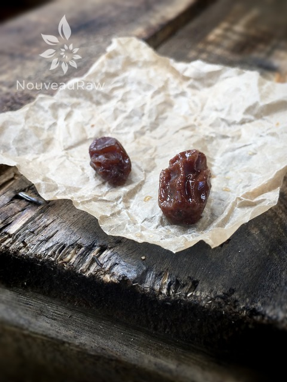

Tahini Ice Cream with Rum Infused Raisins

~ raw, vegan, gluten-free ~
Rum infused raisins, pffft…those are drunken raisins if you ask me! Haha In this recipe you can use real rum, or you can use rum extract, your call. I made one batch with the real stuff, and I had a hard time keeping my husband out of them. He was snacking on them all day.
If you are not a fan of tahini, don’t let this recipe scare you away. Simply omit it! You can either replace it with another nut butter or not worry about it at all. The volume of its absence won’t affect the recipe.
My husband enjoyed it but thought that it could be a tad bit sweeter, so I upped the sweetener from 1/2 to 3/4 cup. It really depends on your sweet tooth. As you are taste testing your batter keep this in mind: warm ice cream tastes sweeter than frozen ice cream.
The temperature of food affects its flavor. Warm foods taste stronger and sweeter than cold foods. For example, melted ice cream tastes much sweeter than frozen ice cream.
There are two reasons for the effects of temperature on flavor. The volatility of a substance is increased at higher temperatures, and so it smells stronger. Taste bud receptivity also is an important factor. Taste buds are most receptive in the region between 68 and 86 degrees F, and so the taste will be more intense in this temperature range. Remember to keep this is mind as you are taste testing recipes, the temperature can fool you.
I hope you enjoy this recipe. Please comment below; I love hearing from you. Blessings, amie sue
- 1 cup raisins
- 2 cups raw cashews, soaked 2+ hours
- 2 cups young Thai coconut meat
- 1 cup raw almond nut milk
- 3/4 cup maple syrup
- 1/4 cup raw tahini butter
- 1 Tbsp vanilla extract
- 1/2 tsp Himalayan pink salt
- Rum extract – see below
Rum Extract Infused Raisins:
- 1 cup raisins
- 6 tsp rum extract in 1 cup water (or use straight Rum)
- Soak overnight
Preparation:
Rum Extract Infused Raisins:
- Over-night step: take 1 cup of the raisins and soak them in the rum (extract) overnight.
Ice cream base:
- Place the cashews in a glass bowl, along with 4 cups of water.
- Soak for at least 2 hours. Read more about why (here).
- The soaking process will help reduce phytic acid, which will aid in digestion.
- The soaking also softens the cashews, so they blend nice and creamy.
- After the cashews are through soaking, drain, and rinse.
- In a high-speed blender, combine the cashews, coconut meat, almond milk, maple syrup, tahini, vanilla, and salt, until completely smooth. Don’t add the rum-soaked raisins yet.
- Due to the volume and the creamy texture that we are going after, it is important to use a high-powered blender. It could be too taxing on a lower-end model.
- Blend until the filling is creamy smooth. You shouldn’t detect any grit. If you do, keep blending.
- This process can take 2-4 minutes, depending on the strength of the blender. Keep your hand cupped around the base of the blender carafe to feel for warmth. If the batter is getting too warm. Stop the machine and let it cool. Then proceed once cooled.
- Place the blender carafe in the fridge or freezer for 1 hour to chill.
- Once chilled pour the mixture into the ice cream machine a little at a time, alternating with the drained, soaked rum raisins, and process according to the manufacturer’s instructions. This step takes about 25 minutes.
- Transfer the ice cream to a freezer-proof container that is airtight. To be honest, we love eating it straight from the ice cream machine because it has a soft-serve like consistency. Oh yum!
Freezing Suggestions for Ice Cream:
-
Use an ice cream machine. Follow the manufactures directions.
-
Freeze in popsicle molds or 3 oz Dixie cups with a popsicle stick inserted.
-
-
Store the ice cream in the very back of the freezer, as far away from the door as possible. Every time you open your freezer door you let in warm air. Keeping ice cream way in the back and storing it beneath other frozen-sold items will help protect it from those steamy incursions.
-
Ice cream is full of fat, and even when frozen, fat has a way of soaking up flavors from the air around it—including those in your freezer. To keep your ice cream from taking on the odors, use a container with a tight-fitting lid. For extra security, place a layer of plastic wrap between your ice cream and the lid.
-
To soften in the refrigerator, transfer ice cream from the freezer to the refrigerator 20-30 minutes before using. Or let it stand at room temperature for 10-15 minutes.
-
Wish to make your own raw ice cream, wonder what machine I might recommend, and more? Click (
here) to check out the Reference Library!
Just a fun photo to show you the difference between a normal
every day raisin compared to a “drunken” raisin. :)

© AmieSue.com